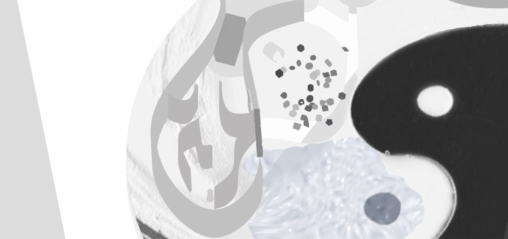
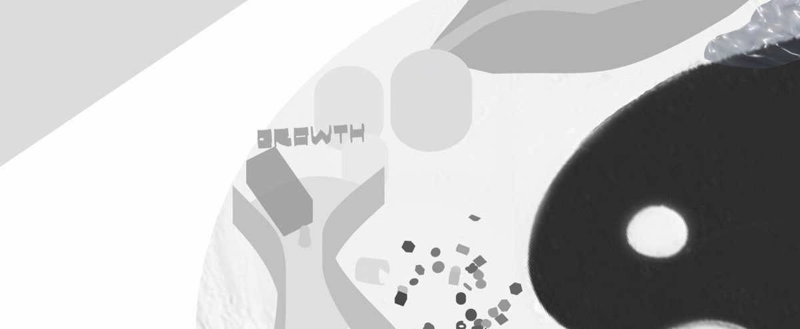
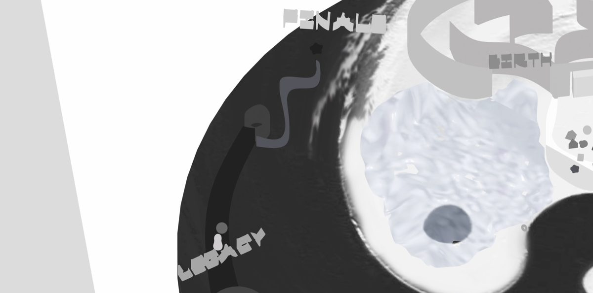

Life Voyage
A 3D exploration game reflecting life's journey through themes of balance, cycles, and continuous discovery.
- Year
- 2025
- Class and project
- Software Lab: 3D Space, Boston University
- Tools and medium
- Spline, 3D Modeling, Game Design, Interactive Experience






